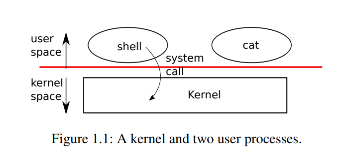

第一章 操作系统接口
操作系统的任务是在多个程序之间共享一台计算机，并提供比硬件本身支持的更有用的服务。操作系统管理和抽象底层硬件，例如文字处理器不需要关心使用哪种类型的磁盘硬件。一个操作系统在多个程序之间共享硬件，这样它们就可以(或者看起来可以)同时运行。最后，操作系统为程序提供了可控的交互方式，这样它们就可以共享数据或者一起工作。
操作系统通过接口向用户程序提供服务。设计良好的接口是很困难的。一方面，我们希望接口简单明了，因为这样更利于正确使用。另一方面，我们可能倾向于为应用程序提供许多复杂的特性。解决这个问题的诀窍在于设计接口时，依赖一些可结合的机制，以此来提供更好的通用性。
本书使用单一的操作系统作为具体的例子来说明操作系统的概念。xv6这个操作系统提供了Ken Thompson和Dennis Ritchie的Unix 介绍的基本接口，并且模仿了Unix的内部设计。Unix提供了一个窄接口，其机制表现突出，提供了令人惊讶的通用程度。这个接口非常成功，甚至现代操作系统BSD、Linux、Mac OSX、Solaris，甚至在一定程度上，Microsoft windows都有类Unix的接口。理解xv6是理解这些系统和其他系统的一个良好开端。
如下图1.1所示，xv6采用传统的内核形式（内核是一个特殊的程序，为正在运行的程序提供服务）。每个正在运行的程序，称为进程，都有包含指令、数据和堆栈的内存。指令实现了程序的运算，数据是计算所依赖的变量，堆栈组织程序的过程调用。一台给定的计算机通常有许多进程，但只有一个内核。

当一个进程需要调用一个内核服务时，它会调用一个系统调用，这是操作系统接口中的一个调用。系统调用进入内核；内核执行服务并返回。因此，一个进程在用户空间和内核空间之间交替执行。
内核使用CPU提供的硬件保护机制来确保每个在用户空间执行的进程只能访问它自己的内存。内核程序的执行拥有操控硬件的权限，它需要实现这些保护；而用户程序执行时没有这些特权。当用户程序调用系统调用时，硬件会提升权限级别，并开始执行内核中预先安排好的函数。
内核提供的系统调用集合是用户程序看到的接口。Xv6内核提供了Unix内核传统上提供的服务和系统调用的子集。表1.2列出了xv6的所有系统调用。
| 系统调用 | 描述 |
|---|---|
| int fork() | 创建一个进程，返回子进程的PID |
| int exit(int status) | 终止当前进程，并将状态报告给wait()函数。无返回 |
| int wait(int *status) | 等待一个子进程退出; 将退出状态存入*status; 返回子进程PID。 |
| int kill(int pid) | 终止对应PID的进程，返回0，或返回-1表示错误 |
| int getpid() | 返回当前进程的PID |
| int sleep(int n) | 暂停n个时钟节拍 |
| int exec(char file, char argv[]) | 加载一个文件并使用参数执行它; 只有在出错时才返回 |
| char *sbrk(int n) | 按n 字节增长进程的内存。返回新内存的开始 |
| int open(char *file, int flags) | 打开一个文件；flags表示read/write；返回一个fd（文件描述符） |
| int write(int fd, char *buf, int n) | 从buf 写n 个字节到文件描述符fd; 返回n |
| int read(int fd, char *buf, int n) | 将n 个字节读入buf；返回读取的字节数；如果文件结束，返回0 |
| int close(int fd) | 释放打开的文件fd |
| int dup(int fd) | 返回一个新的文件描述符，指向与fd 相同的文件 |
| int pipe(int p[]) | 创建一个管道，把write/read文件描述符放在p[0]和p[1]中 |
| int chdir(char *dir) | 改变当前的工作目录 |
| int mkdir(char *dir) | 创建一个新目录 |
| int mknod(char *file, int, int) | 创建一个设备文件 |
| int fstat(int fd, struct stat *st) | 将打开文件fd的信息放入*st |
| int stat(char file, struct stat st) | 将指定名称的文件信息放入*st |
| int link(char file1, char file2) | 为文件file1创建另一个名称(file2) |
| int unlink(char *file) | 删除一个文件 |
表1.2：xv6系统调用（除非另外声明，这些系统调用返回0表示无误，返回-1表示出错）
本章的其余部分概述了xv6的服务——进程、内存、文件描述符、管道和文件系统——并用代码片段和关于shell（Unix的命令行用户界面）如何使用它们的讨论来阐释。Shell对系统调用的使用说明了它们是如何被精心设计的。
Shell是一个普通的程序，它从用户那里读取命令并执行它们。Shell是一个用户程序，而不是内核的一部分，这一事实说明了系统调用接口的强大之处：shell没有什么特别之处。这也意味着shell很容易替换；因此，现代Unix系统有多种shell可供选择，每种shell都有自己的用户界面和脚本特性。Xv6 Shell是Unix Bourne shell本质的简单实现。它的实现可以在(user/sh.c:1)中找到.